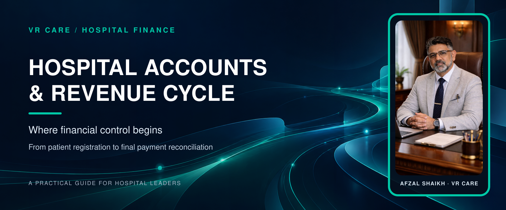
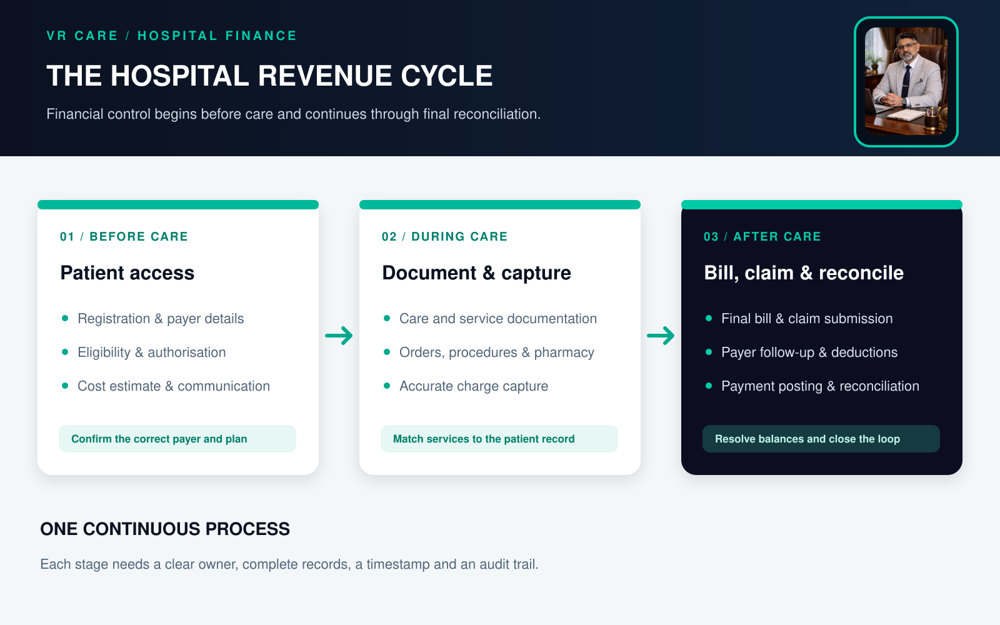
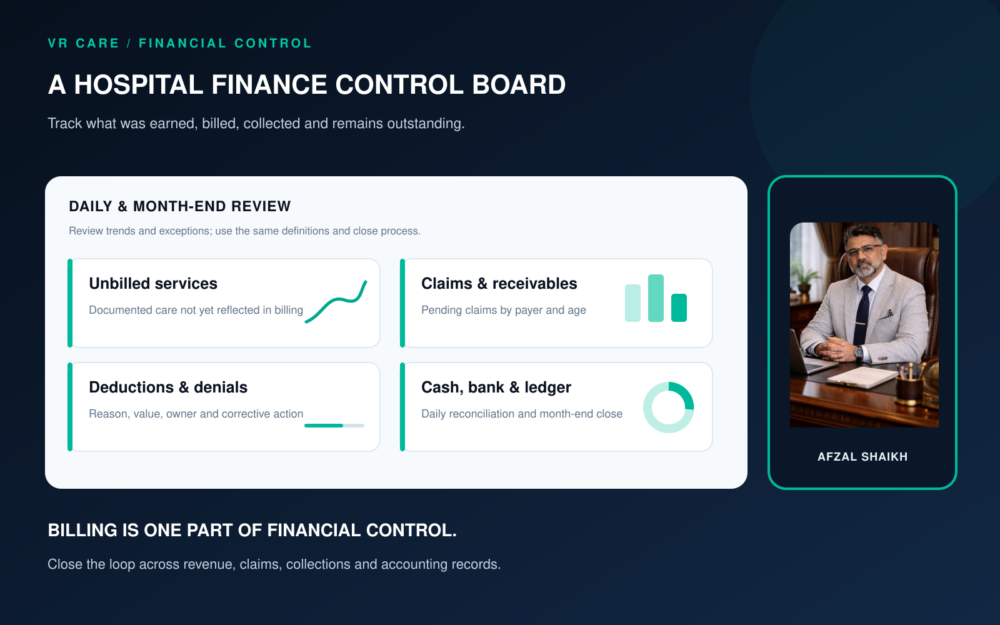

Hospital Accounts and Revenue Cycle Management: Where Financial Control Begins

Hospital revenue cycle management (RCM) is the coordinated process of tracking payment for services from a patient's first contact or registration through care, billing, claim submission, payment and final account resolution. Hospital accounts record and report the organisation's financial activity, including revenue, expenses, payables, cash, bank transactions and financial close.
The two functions work together. RCM follows patient-service revenue through its journey; accounts reconciles and reports the financial result. A hospital gains better control when departments use clear workflows, accurate records, defined approvals and timely reconciliation.
- Why hospital accounts and RCM must work together
- Hospital accounts vs revenue cycle management
- The hospital revenue cycle: from registration to reconciliation
- A practical control view for hospital leaders
- Hospital RCM metrics to consider
- How hospital software can support financial control
- Common mistakes to avoid
- The management takeaway
- Frequently asked questions
Why hospital accounts and RCM must work together
A hospital may provide appropriate care, raise bills and still have weak financial visibility. A service can be documented late, a charge can be missed, a claim can remain incomplete, a deduction can go unexplained or a receipt can be posted to the wrong account.
Revenue cycle management connects the administrative and care-related steps that lead to payment. The Healthcare Financial Management Association (HFMA) describes the cycle as starting with the patient's first appointment or encounter and continuing until the final balance is paid. Its overview includes registration, benefit verification, care delivery, claim submission and reimbursement.
Hospital accounts then help management reconcile revenue and collections with the general ledger, cash and bank records, expenses and reporting requirements. The teams should share data and review exceptions together, while retaining clear responsibility for each step.
Hospital accounts vs revenue cycle management
| Function | Main focus | Typical work |
|---|---|---|
| Revenue cycle management | Patient-service revenue from first contact to resolution | Registration, payer details, estimates, authorisation, charge capture, billing, claims, follow-up, denial and deduction review, collections |
| Hospital accounts | Recording and reporting the organisation's financial activity | Revenue and expense records, accounts payable, cash and bank reconciliation, receivables, payroll and month-end reporting |
| Shared management control | Reliable financial information and timely action | Approved tariffs, reconciled records, clear ownership, audit trails and variance review |
The hospital revenue cycle: from registration to reconciliation

1. Patient access and financial preparation
The cycle starts before or at registration. Capture the correct patient and payer details, confirm the applicable coverage or payment route, explain expected costs and document required approvals according to hospital policy.
For insurance and TPA cases, assign responsibility for eligibility checks, pre-authorisation and required documents. For self-pay cases, make estimates and payment terms understandable. The NABH Hospital Accreditation Standards, 6th Edition (2025), say that expected costs of treatment and care should be explained clearly to patients or their families.
2. Care documentation and charge capture
During care, the clinical and service records should support the final bill. Relevant records may include orders, procedures, diagnostics, pharmacy issues and returns, consumables and package-related exceptions. Each hospital should define who records, checks and transfers each item into billing.
The objective is accurate capture of services that were actually provided and appropriately documented. It is not to add unnecessary services or apply unsupported charges.
3. Bill review, discharge and claim submission
Before a bill is finalised, review the patient account for missing documentation, unposted services, approved discounts, package inclusions and payer requirements. Keep an audit trail for adjustments, waivers, credit notes and approvals.
For cashless and credit cases, prepare and submit claims with the records required by the relevant payer and contract. Track submission dates and outstanding documentation so delays have an owner and a next action.
4. Payment posting, deductions and receivables follow-up
When payments or remittances arrive, post them to the correct patient or payer account and compare the amount received with the amount expected. Record deductions and denials by reason, value, payer and status. Route disputes or missing documents to a named owner for review.
Review outstanding amounts by payer and age. Separate pending claims, disputed deductions, patient balances and amounts requiring write-off review. One total receivables figure does not show what action is needed.
5. Accounts reconciliation and financial close
The accounts team should reconcile billing and collection records with bank receipts, cash records, payer remittances and ledger entries under the hospital's accounting policy. Close-period reports should distinguish revenue recorded, bills raised, cash received and balances still outstanding.
Recorded revenue and cash collected are different measures. Management should review both and understand the timing differences rather than treating a bill or a bank credit as the complete financial picture.
A practical control view for hospital leaders
| Stage | Common gap | Management check |
|---|---|---|
| Registration and payer details | Incorrect or incomplete information | Are patient, payer and plan details checked before billing? |
| Care documentation | Records are incomplete or entered late | Can the service record be matched to the clinical record and patient account? |
| Charge capture | Documented services are missing from billing | Are exceptions reviewed by department and resolved promptly? |
| Bill and claim preparation | Tariff, package or claim documents do not match | Are rates approved and payer requirements tracked? |
| Payment and follow-up | Deductions, denials or balances remain unattended | Does every significant item have a reason, owner and next action? |
| Accounts close | Cash, bank, billing and ledger figures do not reconcile | Are differences investigated and signed off on a defined schedule? |

Hospital RCM metrics to consider
Start with a small set of measures, define each one and use the same rules from period to period:
- Unbilled service exceptions: value or count of documented services not yet reflected in billing.
- Claim submission turnaround: time from the hospital-defined claim-ready point to submission.
- Pending claims and receivables ageing: outstanding balances grouped by payer and age.
- Denial and deduction review: amount or count of denied or deducted claims, with reasons and outcomes tracked separately.
- Collection realisation: cash posted compared with the hospital-defined amount expected for the same account or period.
- Reconciliation exceptions: unmatched cash, bank, billing or ledger entries awaiting resolution.
- Adjustment and discount review: value, reason and approval trail for discounts, waivers and credit notes.
These are management measures, not universal benchmarks. State the numerator, denominator, reporting period and exclusions before comparing teams or hospitals.
How hospital software can support financial control
A hospital information system can connect registration, billing, pharmacy, diagnostics, procedures, TPA workflows, collections and accounts. Useful capabilities include role-based access, approved rate masters, patient-level charge history, payer-wise receivables, adjustment approvals, audit trails, claim status tracking and reports that reconcile departmental activity with finance records.
Software helps only when the process and responsibilities are clear. If the same gap is repeatedly allowed by a workflow, adding another report may simply make the gap more visible without correcting it.
Common mistakes to avoid
- Treating the billing desk and accounts department as the same function
- Reviewing claims only at month-end instead of tracking status and next action
- Treating gross bills, recognised revenue and cash collections as interchangeable
- Allowing discounts or credit notes without a defined approval trail
- Relying on separate spreadsheets that do not reconcile with the patient account or ledger
- Setting collection targets without reviewing payer terms, documentation and patient communication
- Pursuing revenue in a way that encourages unnecessary services or unsupported charges
The management takeaway
A reliable hospital revenue cycle is built through coordinated work across patient access, clinical departments, billing, TPA, collections and accounts. Leaders need to know what was provided, what was documented, what was billed, what was submitted, what was collected and what remains unresolved.
For a practical next step, VR Care's hospital operations and management audit reviews financial and revenue systems alongside workflows, TPA processes, documentation and performance visibility. You can also read the guides to hospital profitability and revenue leakage, hospital KPIs and ARPOB in hospitals.
Frequently asked questions
What is revenue cycle management in a hospital?
Revenue cycle management is the process of following payment for patient services from initial contact and registration through care, billing, claim submission, payment and resolution of the account.
What does a hospital accounts department do?
A hospital accounts department records and reports financial activity. Work may include revenue and expense records, payables, cash and bank reconciliation, receivables and period-end reporting, according to the organisation's structure and accounting policy.
What are the main stages of a hospital revenue cycle?
Common stages include patient registration and payer checks, cost communication and authorisation, care documentation and charge capture, bill review, claim submission, payment posting, denial or deduction follow-up, collections and final reconciliation.
What is the difference between hospital billing and hospital accounts?
Billing prepares patient or payer bills for services. Hospital accounts records and reconciles financial transactions across the organisation. Both need accurate, connected data, but they have different responsibilities.
Which hospital RCM metrics should management review?
Hospitals can review unbilled service exceptions, claim submission turnaround, pending claims and receivables ageing, denial and deduction reasons, collection realisation, reconciliation exceptions, and adjustments or discounts. Definitions should be documented before results are compared.
Does hospital software alone fix revenue cycle problems?
No. Software can support connected workflows, access controls, approvals and visibility. Hospitals also need clear process ownership, staff training, accurate source records and a regular exception review.
How does NABH relate to hospital billing and cost communication?
The NABH Hospital Accreditation Standards, 6th Edition (2025), include an expectation that the costs of treatment and care are explained clearly to patients or families. Hospitals should use their current applicable standards and policies when designing patient communication and financial workflows.